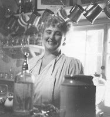
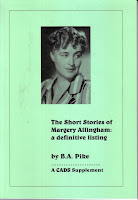
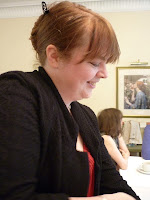
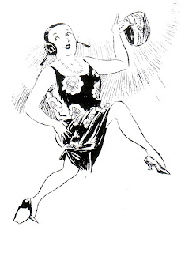

 |
| Margery Allingham |
{kind=link}
| Albert Campion |
{kind=link}
Margery Allingham (1904 – 1966) was
one of the Golden Age “Queens of Crime” along with Agatha Christie, Dorothy Sayers and Ngaio Marsh. Her series detective, Albert Campion, sometimes
merges in people's minds with Sayers's Lord Peter Wimsey – those
languid, upper-class, vaguely Woosterian / Sir Percy Blakeney-ish
types.
As far as I'm concerned this perception does Campion and his creator a disservice. I was lucky enough to write Allingham's biography (The Adventures of Margery Allingham) and remain constantly impressed by the way she used her detective to dramatise her personal preoccupations and record her observations of social change over four decades.
 |
| Bibliography of MA's short stories |
{kind=link}
Allingham was always a developing and experimental writer. She stayed within the 'box' of the crime novel but never wrote the same book twice. Campion appears in nineteen full-length novels from The
Crime at Black Dudley (1929) to Cargo of Eagles (1968) as well as numerous short stories and three posthumous continuation novels. Two of these were written by
Allingham's husband, Pip Youngman Carter and there is one, yet to come, which was begun
by Youngman Carter and has recently been completed by award-winning crime-writer Mike Ripley. This new novel, Mr
Campion's Farewell, will be published in time for Crimefest
2014. It's not likely to attract the attention, or the controversy,
generated by this week's announcement that Sophie Hannah has been
commissioned to write a 'new' Poirot but Crimefest 2014 will be commemorating the Allingham legacy in more ways than this one.
Allingham died in 1966, her husband in
1968. There were no children of the marriage and for the next thirty
odd years the estate was managed by Margery's younger sister Joyce.
This isn't the place to enumerate the many good deeds of Joyce
Allingham but among them was an unobtrusive legacy salted away for
the Margery Allingham Society. At the Society's AGM in May this year a new
treasurer began wondering aloud whether some of this money might be
used to benefit the crime
writers of today and perpetuate Margery Allingham's name. The AGM was also the annual Margery Allingham Birthday lunch and our
guest speaker was novelist Imogen Robertson, a committee member of
the Crime Writers' Association. “Well,” said Imogen, “we're
looking for sponsors for a short story competition to run alongside
our Dagger Awards.”
 |
| Imogen Robertson cutting Allingham's birthday cake |
{kind=link}
Almost as easily as that, the deed was
done. Lucy Santos and Alison Joseph of the CWA met with
representative committee members of the Margery Allingham Society for coffee and cake in
the British Library and a new competition was born. It's open to
anyone over 18, wherever they live. Stories must be in English,
previously unpublished, anonymous and no more than 3,500 words.
There's an entry fee of £10 and the prize, sponsored by the Margery
Allingham Society, using Joyce Allingham's legacy, is £1000.
It's likely that there'll be other
treats in store – tickets to the annual CWA dinner, publication -- who knows? These and other arrangements are still being finalised and
an official announcement of the competition will be made at the
Hampstead & Highgate literary festival on September 17th. Full details will be posted on the CWA website after that date.
Stories must be submitted by March 2014 and the winner will be
announced at Crimefest 2014.
The CWA Daggers are among the most
prestigious awards in the crime-writing world. It's my dream that the
CWA Margery Allingham Short Story Competition will also be a prize worth
winning. It does not discriminate between self-published and traditionally-published writers. The CWA Margery Allingham Short Story Competition is open to all. Please use this blog to spread the word.
 |
| Margery Allingham |
{kind=link}